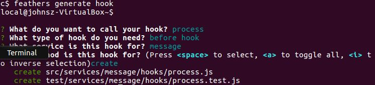

Finishing the server
We implemented a basic client in the previous section which allows us to exercise the server. Let's complete that server now.
Working example
| Source code: https://github.com/eddyystop/feathers-an-introduction/tree/master/examples/chat/server/c
| Client HTML code: https://github.com/eddyystop/feathers-an-introduction/blob/master/examples/chat/server/c/public/socketio.html
| Client source code: https://github.com/eddyystop/feathers-an-introduction/blob/master/examples/chat/server/c/public/socketio-app.js
| Start the server: node ./examples/chat/server/c/src
| Point the browser at: //localhost:3030/socketio.html
Completing the server requirements
We'll now complete the remaining server requirements we itemized when we started. They are:
- messages
- Restrict message posting to signed-in users.
- Sanitize the messages, e.g. basic HTML escaping.
- Identify which user created a message and at what time.
- Allow users to only modify and delete their own messages.
Add authentication
We could have added authentication to messages back when we created the service. However this now gives us a chance to manually add the authentication hooks to all methods.
// src/services/message/hooks/index.js
exports.before = {
all: [
auth.verifyToken(),
auth.populateUser(),
auth.restrictToAuthenticated()
],
/// ...
};
auth.verifyTokenthrows if the JSON Token is badly formed.auth.populateUsercopies the client's user item tohook.params.user.restrictToAuthenticatedthrows if the user is not already authenticated.
Add authorization
We need a hook which ensures users can only remove, update and patch their own messages.
mkdir examples/chat/server/c
cd examples/chat/server/c

Then copy the following hook:
// src/services/message/hooks/restrict-to-sender.js
const errors = require('feathers-errors');
module.exports = function(options) {
return function(hook) {
const messageService = hook.app.service('messages');
// First get the message that the user wants to access
return messageService.get(hook.id, hook.params).then(message => {
// Throw a not authenticated error if the message and user id don't match
if (message.sentBy._id !== hook.params.user._id && hook.provider) {
throw new errors.NotAuthenticated('Access not allowed');
}
// Otherwise just return the hook
return hook;
});
};
};
hook.app- Hooks conveniently get theappobject.hook.app.service()- Withapp, hooks can get a handle to any service.- The update, patch and remove service calls do not necessarily provide us with the data we know who created the message. Therefore we first read the message.
hook.params. Using
hook.paramsin a method call is a technique worth remembering. Here wegetthe message item using the same context as the update, patch or remove call. If the original call was made from, say, a Socketio client, wegetthe message looking like a Socketio client. This way all message hooks will treat thegetproperly for that context.Feathers errors. Feathers handles errors cleanly. One of the things it does is return a
classNameon theerrorobject which indicates the type of error which occurred. That lets you check error types without resorting to the risky alternative of comparing toerror.message. In this case,classNamewill benotAuthenticated.
Processing messages
Let's create a hook with which to complete message processing. 
Then copy the hook:
// src/services/message/hooks/process.js
module.exports = () => hook => {
hook.data.text = hook.data.text
.substring(0, 400) // Messages can't be longer than 400 characters
.replace(/&/g,'&').replace(/</g,'<').replace(/>/g,'>'); // Do basic HTML escaping
hook.data.userId = hook.params.user._id; // Add the authenticated user _id
return hook;
};
hook.params.usercontains the authenticated user item fromauth.populateUser().hook.datacontains the message item.- The
hook.data.userIdfield is added, being set to the user's id. - The message text in
hook.data.textis sanitized. - The
hook, now with modified data, is returned.
Adding createdAt
// src/services/message/hooks/index
exports.before = {
create: [ process(), setCreatedAt() ],
}
- The
setCreatedAthook adds thecreatedAtproperty.
Populating and serializing messages
We want to add the creating user's item to the message item before the message is sent to any clients listening for messages.
// src/services/message/hooks/index
const populateSchema = {
include: [{
service: 'users',
nameAs: 'sentBy',
parentField: 'userId',
childField: '_id'
}]
};
const serializeSchema = {
only: [ '_id', 'text', 'createdAt' ],
sentBy: {
only: [ 'email', 'avatar' ]
}
};
exports.after = {
find: [ populate({ schema: populateSchema }), serialize(serializeSchema) ],
get: [ populate({ schema: populateSchema }), serialize(serializeSchema) ],
create: [ populate({ schema: populateSchema }), serialize(serializeSchema) ],
}
`
- The
populatehook can recursively join child items to parents. - The
populateSchemajoins users those items to the message whereuser._Idequalsmessage.userId. Such items are saved in thesentByproperty. - The
serializehook removes values which are needed at that time. - The
serializeSchemaretains_id,text,createdAtfrom the message item, andemail,avatarfrom the joined user item. - The populate and serialize occur for the find, get and update methods.
We won't want to include the joined user item should the client decide to change the message and patch the item in the database.
// src/services/message/hooks/index
exports.before = {
update: [ dePopulate(), restrictToSender() ],
patch: [ dePopulate(), restrictToSender() ],
};
- The
dePopulatehook removes all joined iitem from a base record. - We preform it before running the update and patch methods.
Running different hooks for server calls than for client ones
You won't always want the same hooks to be executed. You may, for example, remove some properties before handing results to a client because of security considerations. However you usually won't have these security issues if the service call is being made on the server.
Conditional hooks. Feathers
Different hooks for different folks. You should develop the habit of reviewing which hooks you want to run for the client, then which you want to run for the server. This habit will save you having to track down unexpected behaviors.
We want a client to be able to only remove its own user's messages,
but we must allow the server to remove them all
as we erase the databases in src/app.js before we start the server.
const restrictToSenderOrServer = when(isProvider('external'), restrictToSender());
exports.before = {
update: [ dePopulate(), restrictToSender() ],
patch: [ dePopulate(), restrictToSender() ],
remove: [ restrictToSenderOrServer ]
};
isProvider('external')is true if the service call was not made by the server.restrictToSender()is the hook we created above. It throws if the user did not create the message.whenrunsrestrictToSender()if the service call was not made by the server.restrictToSenderOrServer- As you can see, hooks are just functions and they can be manipulated with code.
The results
This completes the server.
Start it with node ./examples/chat/server/c/src.
It will display:
feathers-an-introduction$ node ./examples/chat/server/c/src
Feathers application started on localhost:3030
users table cleared.
Point the browser at: //localhost:3030/socketio.html.
- Sign up page:
- Enter
ying@qq.cnfor the email. - Enter
ying123for the password. - Click
Add user
- Enter
- Sign in page:
- Enter
ying@qq.cnfor the email. - Enter
ying123for the password. - Click
Sign in
- Enter
- Chat page:
- Enter
新年快樂(Happy New Year in Chinese) for the text. - Click
Send message.
- Enter
The console will display
Users in chat
["ying@qq.cn"]
message created
{ _id: "Wvm38PB310eykSSB",
_include: ['sentBy'],
createdAt: "2017-01-03T16:02:42.714Z"
sentBy: {
avatar: "https://s.gravatar.com/avatar/db67e5e4176f9c9aaf76e6bd17cf447d?s=60",
email: "ying@qq.cn"
},
text: "新年快樂" }
_includeis added by populate and contains the property names of all joined items. dePopulate uses it to remove the joined items.createdAtwas added by the setCreatedAt hook.sentBywas added by populate and contains the joined user item.